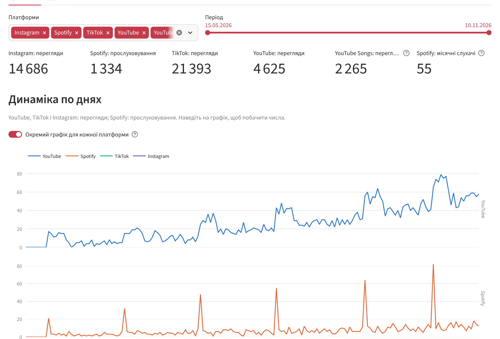

Уся статистика вашої музики в одному місці
MusicStats збирає цифри незалежних музикантів з YouTube, Spotify for Artists, TikTok, Instagram
і DistroKid — і перетворює їх на зрозумілі графіки та висновки простою мовою.
Відкрити MusicStatsЯк це працює

Один дашбордПерегляди й прослуховування по днях, топ пісень і відео, аудиторія й заробіток
з усіх платформ поруч.
YouTube в один клікПідключіть канал (лише перегляд) — і за хвилину побачите статистику
за рік, безкоштовно й без файлів. У Pro вона оновлюється сама щодня.
Висновки, а не лише графікиЗвіт підказує, що працює: найкращі релізи, ріст, мовні версії
пісень, реклама проти органіки.
Ваші дані — вашіКожен акаунт має власну приватну базу. Нічого не продається й не
передається; видалити все можна будь-коли.
Тарифи
Free — $0Акаунт, імпорт файлів усіх платформ і шаблонів, YouTube в один клік (статистика
за рік без файлів), дашборд, топ пісень і відео, заробіток, аудиторія, висновки звіту на сторінці.
Pro — $4/міс або $36/рікУсе з Free, плюс щоденне автоматичне оновлення YouTube (без
файлів) і завантаження повного звіту-висновків. Оплата карткою через Stripe; скасувати можна будь-коли; повне
повернення протягом 14 днів після першої оплати. Докладно:
Умови використання.
Як MusicStats використовує дані Google
Кнопка «Підключити YouTube» просить у Google доступ лише на перегляд аналітики вашого каналу
(yt-analytics.readonly) і списку відео (youtube.readonly). Вони потрібні лише для того,
щоб показати вам вашу статистику: перегляди, час перегляду, лайки, коментарі, поширення й нових підписників
по днях і по відео. MusicStats нічого не публікує, не змінює й не видаляє на YouTube. Відключення прибирає доступ
і статистику, отриману через нього. Докладно: Політика конфіденційності,
Умови використання, Умови YouTube,
Політика конфіденційності Google.
MusicStats у ранньому доступі: акаунти — за запрошенням.
Напишіть нам, щоб приєднатися.
All your music statistics in one place
MusicStats brings together the numbers of independent musicians from YouTube, Spotify for Artists,
TikTok, Instagram and DistroKid — and turns them into clear charts and plain-language insights.
Open MusicStatsHow it works

One dashboardDaily views and streams, top songs and videos, audience and earnings from all
platforms side by side.
YouTube in one clickConnect your channel (read-only) and see a year of statistics in a
minute — free, no files. In Pro it updates itself every day.
Insights, not just chartsA report that says what works: best releases, growth, language
versions of songs, promoted vs organic posts.
Your data stays yoursEach account has its own private database. Nothing is sold or shared;
you can delete everything at any time.
Pricing
Free — $0Account, file import for all platforms and templates, YouTube in one click (a year
of statistics, no files), dashboard, top songs and videos, earnings, audience, report findings on the page.
Pro — $4/month or $36/yearEverything in Free plus daily automatic YouTube updates (no files)
and the full insights report download. Card payment via Stripe; cancel any time; full refund within 14 days of the
first payment. Details:
Terms of Service.
How MusicStats uses Google data
When you click «Connect YouTube», MusicStats asks Google for read-only access to your own channel's
analytics (yt-analytics.readonly) and video list (youtube.readonly). It uses them only to
show you your statistics — views, watch time, likes, comments, shares and new subscribers per day and per
video. MusicStats never posts, edits or deletes anything on YouTube. Disconnecting removes the access and the
statistics fetched through it. Details: Privacy Policy, Terms of
Service, YouTube Terms of Service,
Google Privacy Policy.
MusicStats is in early access: accounts are by invitation —
write to us to join.